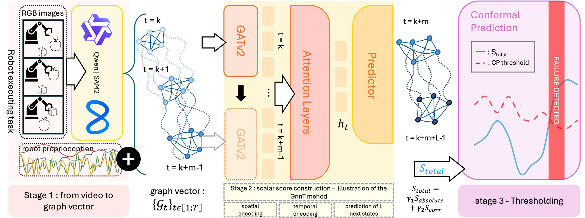
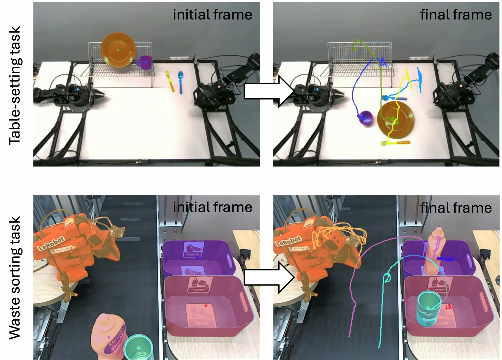
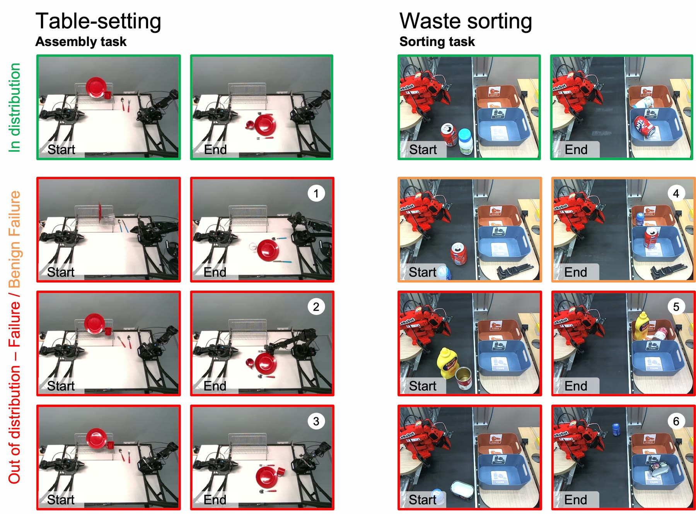
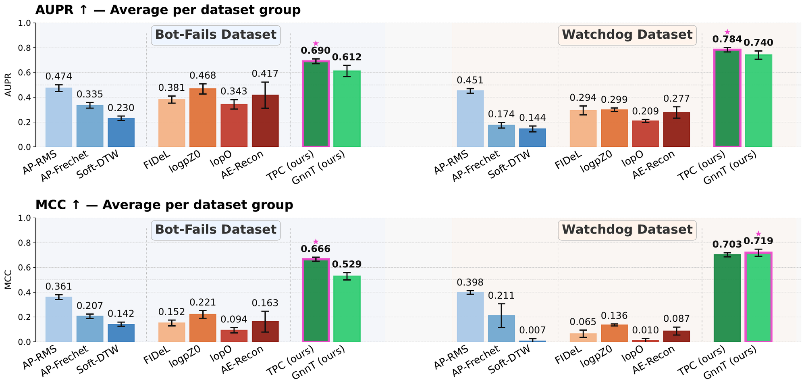
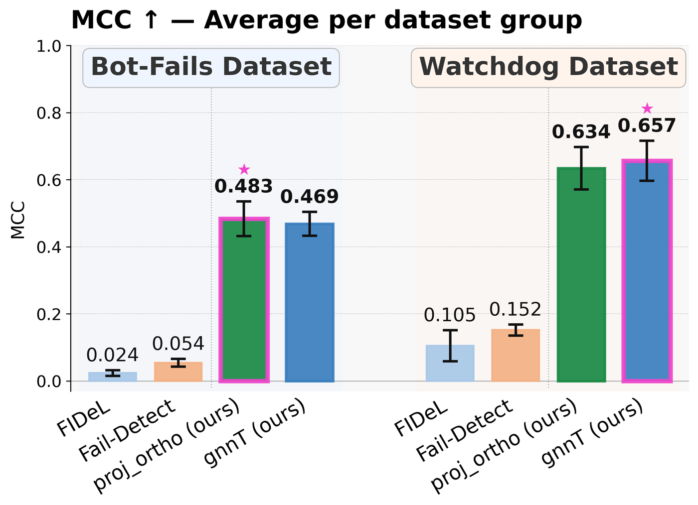
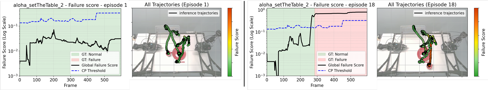
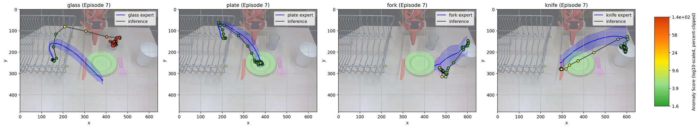
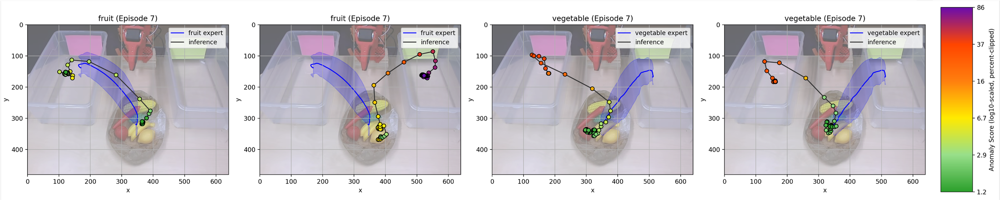
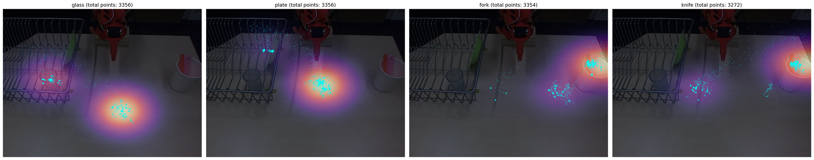

Reliable real-time failure detection is critical for deploying learned robotic policies in real-world environments. However, explicitly enumerating failures is intractable in open-world settings, making failure detection from nominal demonstrations alone a necessary alternative. Existing approaches face key limitations: purely visual methods are highly sensitive to benign background variations, while kinematic monitors lack awareness of the surrounding environment. Crucially, both often fail to capture relational errors involving object identity, spatial arrangement, or task progression, such as grasping the wrong object or violating interaction structure. In this work, we introduce Robot-WATCHDOG, a self-supervised failure detection framework based on an object-centric representation of dynamic scenes as spatio-temporal graphs over tracked labeled objects and their interactions. Within this representation, the framework deploys two complementary methods to adapt across data regimes. For data-rich settings, we propose GnnT, a predictive graph transformer that identifies failures as deviations from learned object-centric spatio-temporal dynamics. To address data scarcity, we introduce Trajectory Projection and Correlation (TPC), a non-parametric method that detects failures through geometric consistency and changes in object-relation dynamics in extreme few-shot scenarios. We evaluate the framework on a public benchmark and a newly collected dataset featuring relationally challenging manipulation tasks. Results show that modeling object-centric spatial and temporal interactions improves failure detection over existing baselines and enables reliable detection of failure modes that are difficult to capture using visual or kinematic monitoring alone.
A substantial class of failures in robotic manipulation does not arise from abnormal motion or corrupted observations, but from incorrect interactions between otherwise familiar objects: grasping the wrong item, violating task-order constraints, or placing an object in an incorrect spatial relation to others. These errors often produce perfectly nominal kinematic profiles and only subtle pixel-level changes, which makes them nearly invisible to action-consistency metrics and to standard visual anomaly detectors alike.
The central idea of this work is to recast failure detection as monitoring the evolution of object interactions over time. Rather than treating visual and kinematic signals as separate modalities, we represent the scene as a spatio-temporal graph of interacting objects, where nodes encode object states and edges encode their pairwise spatial relationships throughout execution. This formulation generalizes prior monitoring approaches — visual detectors can be read as operating on node appearance, kinematic monitors as tracking motion along trajectories — while additionally exposing the relational structure required to detect task-relevant interaction failures.
Each episode is converted from RGB observations into a sequence of 2D trajectories over tracked labeled objects, using a vision-language initialization model together with a tracking pipeline. This yields a temporal graph sequence \( \{ \mathcal{G}_t \}_{t=1}^{T} \), where at each time step the scene is abstracted as \( \mathcal{G}_t = (V, E_t, X_t) \). Vertex features encode absolute positions and instantaneous velocities, \( x_{i,t} = [\, p_{i,t},\; p_{i,t} - p_{i,t-1} \,] \), while each edge encodes the explicit pairwise spatial relation between two entities from their relative displacement \( o_{ij,t} = p_{j,t} - p_{i,t} \): \( e_{ij,t} = \left[\, o^{(x)}_{ij,t},\, o^{(y)}_{ij,t},\, d_{ij,t},\, \cos(\theta_{ij,t}),\, \sin(\theta_{ij,t}) \,\right] \in \mathbb{R}^5 \).
This representation has three useful properties for failure detection: (i) translation invariance through relative edge encoding, reducing sensitivity to workspace shifts; (ii) explicit modeling of pairwise object interactions, so that failures involving object identity or spatial arrangement are represented directly; and (iii) temporal consistency through velocity features and graph sequences, enabling detection of both instantaneous and sequential deviations.


GnnT — predictive spatio-temporal dynamics. Spatial structure is encoded with GATv2 dynamic attention, so that the network can weight task-relevant interactions (e.g. an end-effector approaching a target object) more strongly than distant or weakly coupled entities. To model action–reaction delays, a sliding window of the past \( m \) spatial embeddings is flattened into \( m \times C \) tokens and processed by a Transformer encoder, with a composite positional encoding accounting for relative time within the window, object identity, and global episode progress. The current-step tokens are projected by an MLP to predict object positions over a horizon \( L \). The network is trained solely on nominal demonstrations, minimizing trajectory MSE together with an edge-consistency term that encourages agreement between predicted and observed pairwise spatial relations: \( \mathcal{L} = \lambda_p \mathcal{L}_{\text{pos}} + \lambda_e \mathcal{L}_{\text{edge}} \). At runtime, failures appear as prediction error.
TPC — extreme few-shot fallback. With fewer than about 25 episodes, predictive models overfit. Trajectory Projection and Correlation is a non-parametric alternative: it scores individual kinematic deviation as the time-weighted orthogonal projection distance to the closest expert trajectory, and adds a correlation penalty measuring the \( \ell_1 \) divergence between the pairwise Pearson correlation matrices of the observed scene and of the nominal dataset. The result is a purely geometric detector that needs no training.
Calibration by conformal prediction. Both detectors are calibrated the same way, which removes any arbitrary task-specific threshold tuning. Non-conformity scores are computed on a held-out calibration set of nominal episodes, and for a user-specified tolerance \( \alpha \in (0,1) \) the decision threshold is the \( (1-\alpha) \)-quantile of those scores. Under exchangeability, this gives a mathematically guaranteed upper bound on the false positive rate, without ever exposing the model to failure data.
We evaluate Robot-WATCHDOG on two complementary datasets. The first is BotFails, a public benchmark for robotic failure detection collected with LeRobot. Of its 10 manipulation tasks we retain the 4 involving rigid, visually distinguishable objects — Table-setting, Dish storing, Vegetable sorting and Groceries sorting; tasks involving deformable or fluid interactions are excluded, as they violate the discrete object abstraction underlying our method.
The second is a new dataset released with this work, made of two manipulation tasks with increased relational and dynamic complexity. Table-setting is a structured assembly task on an ALOHA platform, where the robot must place plates and utensils in predefined spatial configurations and in the correct temporal order — emphasizing relational correctness. Waste sorting is a dynamic task on an SO-100 arm, where objects arrive on a moving conveyor belt, so that positions evolve continuously and both initial conditions and interaction timing vary from episode to episode. In total the dataset provides 272 episodes and 170,752 annotated frames of RGB video, proprioception and language, split into expert demonstrations for training and test sets containing both nominal and failure trajectories.
| Task | Split | Robot | # Episodes | # Frames | FPS | Cameras | Action dim |
|---|---|---|---|---|---|---|---|
| Table-setting | Expert | ALOHA | 100 | 67,341 | 15 | 4 views | 9 |
| Table-setting | Test | ALOHA | 21 | 13,471 | 15 | 4 views | 9 |
| Waste sorting | Expert | SO-100 | 100 | 59,562 | 30 | Top view | 6 |
| Waste sorting | Test | SO-100 | 51 | 30,378 | 30 | Top view | 6 |

We compare against trajectory-matching baselines (AP-RMS, AP-Fréchet, Soft-DTW), learned representations (logpZO, lopO, AE-Recon) and the visual-semantic detector FIDeL. Across both datasets and all metrics, our object-centric methods consistently outperform prior work: TPC and GnnT reach AUPR scores of 0.69–0.78 and MCC scores of 0.67–0.72, whereas the strongest baseline reaches only 0.47 and 0.40.
The two variants split along data availability, exactly as designed. TPC achieves the highest MCC on BotFails (0.666), where limited training data favours its non-parametric formulation, while GnnT performs best on the more dynamic Watchdog dataset (0.719 MCC), showing that predictive spatio-temporal modeling benefits continuous and delayed interactions. Trajectory metrics perform substantially worse because they evaluate trajectories independently and therefore cannot capture relational deviations between objects; density, reconstruction and visual baselines are less consistent, suggesting that implicit latent representations struggle to encode structured object interactions robustly.






GnnT running online on the two tasks of the Watchdog dataset. The overlay shows the tracked object nodes, the instantaneous failure score against its conformally calibrated threshold, and the per-node status.
Robot-WATCHDOG relies on a discrete object-centric abstraction, which limits applicability to tasks involving highly deformable materials, fluids, or interaction domains without a clear object decomposition (e.g. painting or soldering). Performance also depends on the upstream vision-language tracking pipeline: severe occlusions, missed detections or identity switches degrade graph quality and propagate to the anomaly detector. Finally, the current formulation models object centroids only, and therefore cannot capture failures involving orientation or fine-grained pose — extending the graph representation with reliable 6D pose estimates is a natural direction for future work.
@inproceedings{rolland2026robotwatchdog,
title={Robot-WATCHDOG: Failure Detection through Object-Centric Graph Representation},
author={Rolland, Quentin and Mayran de Chamisso, Fabrice and Mouret, Jean-Baptiste},
booktitle={Conference on Robot Learning (CoRL)},
year={2026},
}